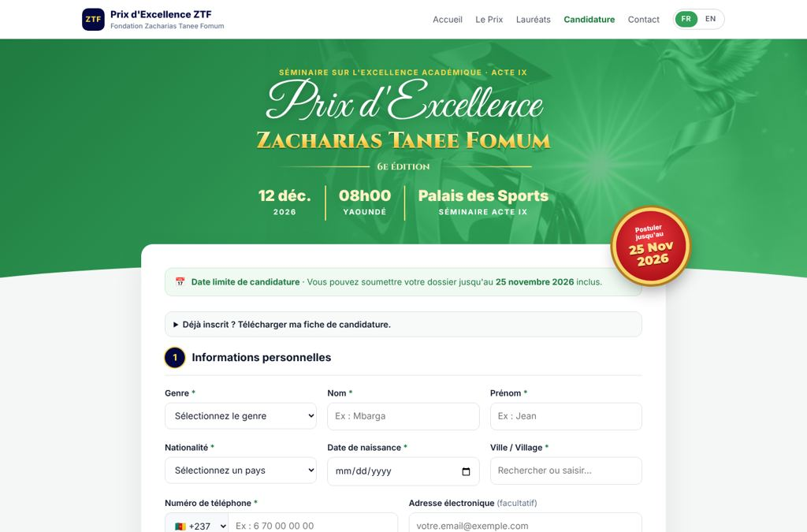
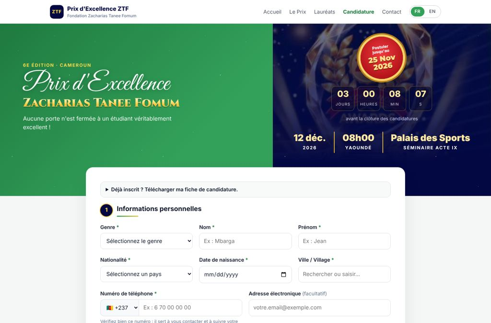
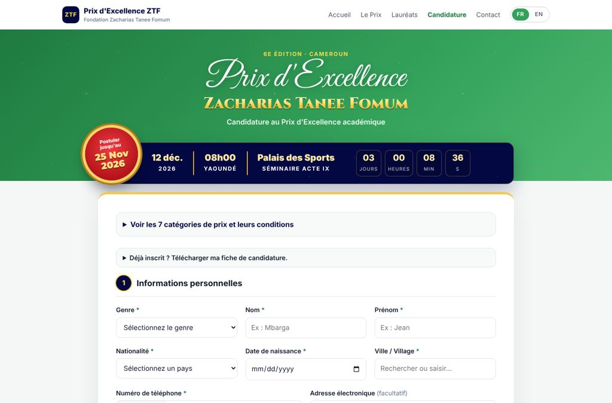
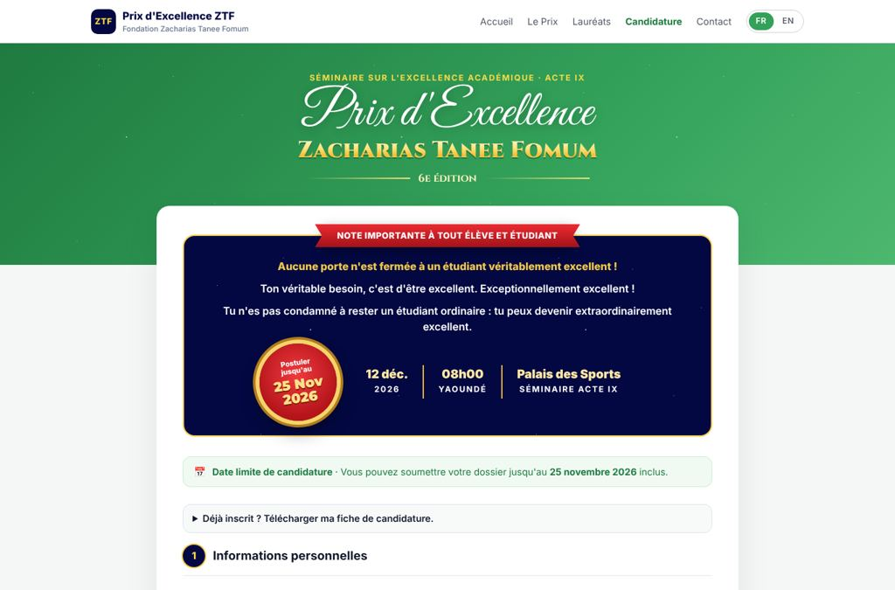
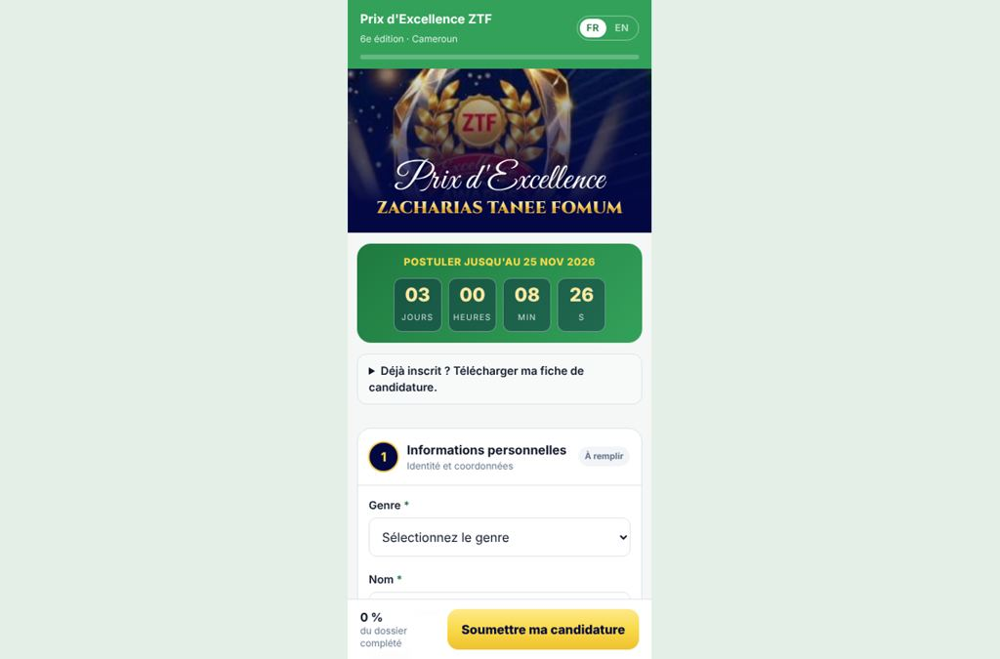

1. Classique doré
Le site actuel presque inchangé : le bandeau vert reçoit le titre de l'affiche et, en filigrane, le lauréat doré. Le médaillon rouge est épinglé au coin de la carte.

2. Vert et nuit
Le bandeau se coupe en deux : à gauche le vert du site avec le titre, à droite le bleu nuit de l'affiche avec le trophée, le médaillon, le compte à rebours et le séminaire.

3. Bandeau séminaire
Bandeau vert du site, puis une barre bleu nuit façon bas d'affiche (date, heure, lieu, compte à rebours, médaillon). Les 7 catégories de prix se déplient dans la carte.

4. Note importante
En tête de la carte blanche, l'encadré bleu nuit et or de l'affiche « Note importante à tout élève et étudiant », sous ruban rouge, avec le médaillon et la date du séminaire.

5. Mobile hybride
La version téléphone du site (barre verte, rubriques blanches repliables, bouton jaune fixe) avec le trophée en en-tête et le compte à rebours dans un encart vert.
À savoir
- Les 5 maquettes demandent exactement les mêmes informations que le formulaire en ligne ; seule la présentation change.
- En bas à gauche, « Maquette · pré-remplir » remplit un dossier fictif ; l'envoi est simulé.